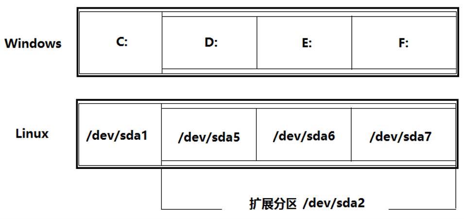
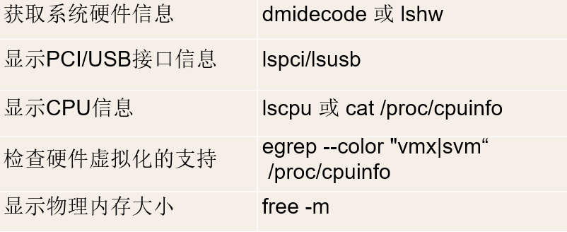
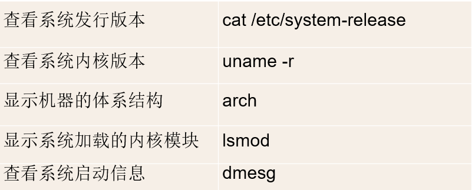
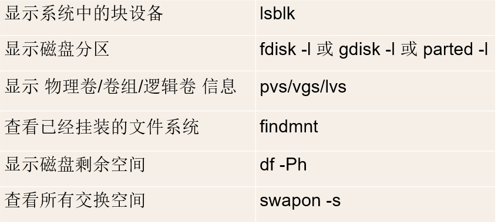

Linux自学习题答案
第一章
-
什么是自由软件、开放源代码软件？其与共享软件有何区别？
- 自由软件所指称的软件，其使用者有使用、复制、散布、研究、改写、再利用该软件的自由。
- 开放源代码软件由一个核心组织领导， 通常由一个很大的社区在Internet上协作开发完成。这种“集市”式的开发模式使得其通常有着比封闭源代码软件更高的质量。
- 开放源代码软件一般是免费发布的，您可以在Internet 上自由下载，用户无需缴纳 License 费用。
- 区别：
- 自由软件：使得用户（包括个体和团体）可以控制程序为己所用。当用户无法控制程序时，这样的软件就是“非自由”（Nonfree）或“专有”（Proprietary）的程序。
- 共享软件：用户可以从各种渠道免费得到它的拷贝，也可以自由传播它。用户总是可以先使用或试用共享软件，认为满意后再向作者付费；如果认为它不值得你花钱买，可以停止使用。
-
自由软件的创始人是谁？GNU和GPL为何意？
- Richard M. Stallman 是自由软件的创始人。
- GNU 是由“GNU's Not Unix”所递归定义出的首字母缩写语。GNU 的首要目标是作为自由软件。即便 GNU 不比 UNIX 有技术优势，它却有一个允许用户合作的社会优点，和一个与道德有关的优点，也就是尊重用户的自由。
- (GPL)是GNU通用公共许可证--General Public License
-
什么是Linux？其创始人是谁？
- Linux 是一个功能强大的操作系统，同时它是一个自由软件，是免费的、源代码开放的，编制它的目的是建立不受任何商品化软件版权制约的、全世界都能自由使用的UNIX兼容产品。
- 由一位名叫 Linus Torvalds 的芬兰赫尔辛基大学的学生开发
-
Linux与UNIX有何异同？
- Linux 具有Unix的全部功能，任何使用 Unix 操作系统或想要学习 Unix 操作系统的人都可以从 Linux 中获益。
- 开源情况 UNIX 是商业化的,而 Linux 是开源的,是免费、公开源代码的。
- 硬件适用 UNIX系统大多是与硬件配套的,也就是说,大多数UNIX系统如AIX、HP-UX等是无法安装在 x86 服务器和个人计算机上的,而 Linux则可以运行在多种硬件平台上。
-
Linux系统有何特点？Linux系统组成如何？
-
特点：
- 开放性的系统
- 多用户多任务的系统
- 具有出色的稳定性和速度性能
- 具有可靠的系统安全性
- 提供了丰富的网络功能
- 标准兼容性和可移植性
- 提供了良好的用户界面
-
组成：
- Linux内核：内核（Kernel）是系统的心脏，实现操作系统的基本功能。
- Linux Shell：Shell是系统的用户界面，提供了用户与内核进行交互操作的一种接口。
- Linux应用程序：包括文本编辑器、编程语言、X Window、办公套件、Internet工具、数据库等。
- Linux文件系统：文件系统是文件存放在磁盘等存储设备上的组织方法。通常是按照目录层次的方式进行组织。系统以 / 为根目录。
-
-
什么是Linux的内核版本？什么是Linux的发行版本？常见的发行版本有哪些？
-
Linux内核版本号由三个数字组成：r.x.y
- r：目前发布的Kernel版本
- x：偶数：稳定版本，奇数：开发中版本
- y：错误修补的次数
-
Linux 发行版（Distribution）是以Linux Kernel为核心，搭配各种应用程序和工具的软件集合。
- 常见的发行版：
- Redhat
- centos
- Ubuntu Linux
- SUSE Linux
- Gentoo Linux
-
-
Red Hat和Fedora是何关系？RHEL与CentOS是何关系？
- Fedora Project 由 Red Hat 公司赞助
- CentOS 社区对 RHEL 源代码进行重新编译。
- CentOS Linux 与 RHEL 产品有着严格的版本对应关系
- Red Hat 公司在 RHEL 系列产品发布后每隔一段时间都会发布更新版，通常称为 RHEL Update。
- CentOS 社区对 Red Hat 公司发布的每一个 RHEL Update 都会发布对应的更新发行版
- CentOS Linux 和与之对应版本号的 RHEL 发行版具有软件包级别的二进制兼容性
-
何谓“主引导记录（MBR）”？
- MBR，全称为baiMaster Boot Record，即硬盘的主引导记录。 为了便于理解，一般将MBR分为广义zhuan和狭义两种：广义的shuMBR包含整个扇区（引导程序、分区表及分隔标识），也就是上面所说的主引导记录；而狭义的MBR仅指引导程序而言。
- 硬盘的0柱面、0磁头、1扇区称为主引导扇区（也叫主引导记录MBR）。它由三个部分组成，主引导程序、硬盘分区表DPT（Disk Partition table）和硬盘有效标志（55AA）。在总共512字节的主引导扇区里主引导程序（boot loader）占446个字节，第二部分是Partition table区（分区表），即DPT，占64个字节，硬盘中分区有多少以及每一分区的大小都记在其中。第三部分是magic number，占2个字节，固定为55AA。
- Windows系统和Linux系统是如何标识磁盘分区的？
 -
Linux的目录结构与Windows中有何不同？
Linux目录结构 - ‘/’在linux中表示根目录。在Linux系统中，除根目录(root)以外，所有文件和目录都包含在相应的目录文件中。
- Linux文件系统采用带链接的树形目录结构，即只有一个根目录（通常用“/”表示），其中含有下级子目录或文件的信息；子目录中又可含有更下级的子目录或者文件的信息。这样一层一层地延伸下去，构成一棵倒置的树。
- ‘/’在windows中也表示根目录，但此跟目录非彼根目录。
- windows对磁盘分区后会有多个磁盘，通常系统会装在C盘。windows有多个磁盘所以就会有‘多个根目录’，在dos命令模式下，在D盘的某文件夹中输入‘cd/’命令回车后会直接回到D盘的根目录。其它磁盘下也会回到该磁盘的目录。在哪个磁盘下使用‘/’，它就表示哪个磁盘的根目录。
-
如何使用本地虚拟控制台？
- 系统默认提供了6个虚拟控制台。每个虚拟控制台可以独立的使用，互不影响。
- 使用Alt+F1～Alt+F6进行多个虚拟控制台之间的切换
-
如何进行本地登录和注销？如何进行远程登录？
- 登录提示符
- 超级用户登录后的操作提示符是“#”
- 普通用户登录后的操作提示符是“$”
- 注销
- logout命令
- Ctrl+d热键
- 远程登录
- 使用ssh登录远程Linux系统
- ssh是英文Secure Shell的缩写。
- 用户在通过ssh连接到远程系统时在网络上传输的口令和数据都是经过加密的。比传统的telnet远程登录更加安全。
- ssh的使用方法：
- 登录提示符
$ ssh -l osmond 192.168.1.100
$ ssh osmond@192.168.1.100
-
默认情况下，超级用户和普通用户的登录提示符分别是什么？
- 超级用户登录后的操作提示符是“#”
- 普通用户登录后的操作提示符是“$”
-
如何获得命令帮助？help命令和--help命令选项的作用分别是什么？
- 字符界面
- 使用help获得bash的内部命令帮助
- 使用man命令获得手册页帮助
- 使用info命令获得texinfo文档帮助
- 使用pinfo命令获得texinfo文档帮助
-
GNOME桌面环境下
- 使用yelp浏览帮助文档
Wh*命令： $ whatis ls $ whereis ls $ which ls Man命令： $ man passwd $ man 5 passwd $ man -k selinux
- 使用yelp浏览帮助文档
-
help 命令能够在控制台上打印出我们需要的命令的帮助信息，使用方式为：help
--help用 help 来查询外部命令的帮助文档
- 字符界面
-
常用的Linux信息获取命令有哪些？各自的功能是什么？
获取硬件信息

获取系统信息

获取存储信息

获取网络信息

- 如何正确地关闭和重新启动Linux系统？
关机：
systemctl poweroff
poweroff
shutdown -h now
重启
systemctl reboot
reboot
shutdown -r now
Last update: 2021-01-19